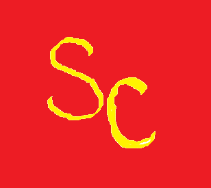

Craven Campaign: Events

Please join us for our upcoming events on the beautiful Simpson College campus. We thank Simpson for being a sponsor of the Craven campaign. Roll Storm! Our campaign rally will be our kickoff event. Craven will give a speech while supporters enjoy free Craven campaign merchandise. Our sponsor lunch will be a recruitment event for potential sponsors within the community. If you are interested in sponsoring the Craven campaign, please visit our contact page. We would be more than happy to talk with you about a sponsorship. Our third event is going to be an ice cream social. Craven will be serving ice cream to his supporters and discussing the main goals of his campaign for president. Our next event is our donor appreciation dinner. At this dinner, current donors who have donated through our website will be honored. If you want to be a part of this event, visit our 'Donate Today' page and help Craven's campaign. Our last scheduled event is our Thanksgiving brunch. At this event, Craven will reenact the first Thanksgiving. The brunch will be followed by a special viewing of 'A Charlie Brown Thanksgiving.'
| Date | Event | Location |
|---|---|---|
| 9/4/2018 | Campaign Rally | Black Box Theatre |
| 9/17/2018 | Sponsor Lunch | Pfeiffer Dining Hall |
| 10/2/2018 | Ice Cream Social | Kent Campus Center |
| 11/1/2018 | Donor Appreciation Dinner | Hubbell Hall |
| 11/20/2018 | Thanksgiving Brunch | Great Hall |